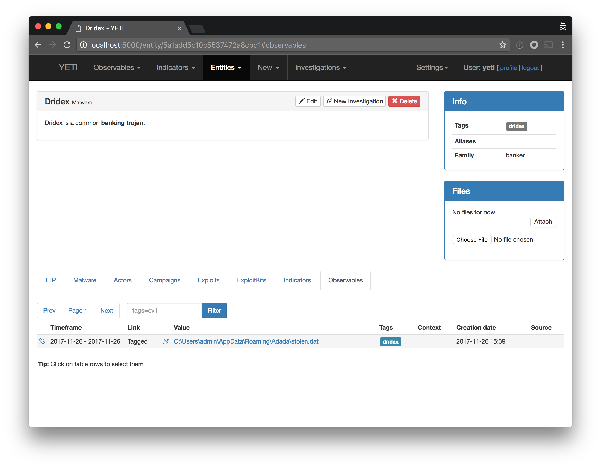
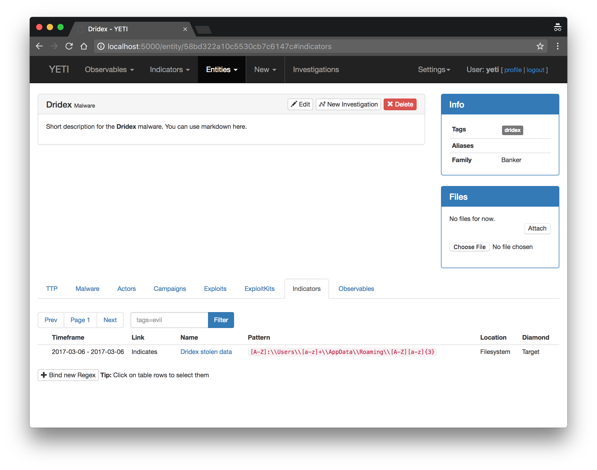

Getting started¶
So Yeti sounds cool, but how to I actually use it? Glad you asked. even though great efforts have been made to “build the manual into the UI”, it’s natural that some questions arise.
You will need to have a running install of Yeti for this to make any sense. Please refer to the Installation section of the documentation.
What is it all about?
Yeti is about organizing observables, indicators of compromise, TTPs, and knowledge on threat actors in a single, unified repository. Ideally, this repository should be queryable in an automated way by other tools (spoiler: it is!)
Malware stolen data¶
You just analyzed the latest Dridex sample and you figured out that it’s using
a subdirectory in the user’s Roaming directory to store its data, and you’d
like to document this. (Whether this is a strong indicator or not is another
story).
You start by adding a new Entity of type Malware called Dridex. Navigate to New > Malware, and populate the fields.
Creating a Malware Entity¶
You start by adding the observable in Yeti’s repository. Navigate to Observables > Search & Add (which also happens to be the landing page). This page allows you to add one or more observables to the repository and tag them accordingly.

Most fields are self-explanatory. As for the others:
- Tags that link to this entity - Observables tagged with the Tags specified here will be linked to this Entity. See note below for more information.
- Bind to entities - Allows you to bind this entity to another one. malware to TTPs, actors to malware, etc.
- Aliases - Other known names for this entity. This field will be indexed in search too.
Note
Tags are a way to quickly assess an Observable’s context. Yeti also uses tags
to link observables to Entities (TTPs, Actors, Exploit Kits, etc.)
When you tag an observable, Yeti will
look for any Entities that have declared these tags and link the observable to them. You
can also tag observables even if no Entity has declared it; it will just not be linked to anything.
This is may be useful for tags like sinkhole, whitelist, internal.
Clicking on Save will take you to the following page:

This will be your go-to page for all information on Dridex. You can get back to it by navigating to “Entities > Malware”.
Note
The Files control box allows you to upload files (external reports, samples, etc.) and attach them to this Entity. (No further processing is done on these files, for the moment).
Any other linked entities will appear in their corresponding tab under the Description section.
Adding Observables¶
Time to add our observable! Head to Observables > Search & Add. This page allows you to add or try to match one or several Observables. The “write” behavior is toggled by the Add unknown observables to database checkbox. When adding Observables, you can specify one or more Tags for your observable as well as the observable type. Guessing should be fine for most observable types (URLs, IP addresses, hostnames) but make sure you specify it if it gets ambiguous (e.g. Bitcoin address vs. Hash).

Click on Launch to launch the Search / Add procedure.

The results page shows the newly added Observable(s) as well as any entities associated linked to them, if any. In this case, we’re “cheating” since tagging our Observable “Dridex” associated the observable to the malware. But if another analyst searches for the same observable, they will leverage Yeti’s database and see the newly created association (you can try this by just searching for your Observable again, with the “Add to database” checkbox off.).
Going back to the Dridex page and selecting the “Observables” tab shows the link was successful. You can break the link between Entities and Observables by hovering on the line and clicking the “Unlink” icon, as can be seen below:
Adding indicators¶
The following week, you run into a new sample of Dridex which has changed. It
now stores its data in a random subdirectory under Roaming. You’ve observed
the following paths:
C:\Users\admin\AppData\Roaming\FamasC:\Users\admin\AppData\Roaming\ThsskC:\Users\admin\AppData\Roaming\Lzmoo
You add the three observables to the database as seen before, tagging them
dridex. But what if an analyst searches for
C:\Users\admin\AppData\Roaming\Enxa or C:\Users\admin\AppData\Roaming\Xiwa?
This is precisely what indicators are for.
Think of indicators as an “enhanced Observable”. Indicators come in two flavors, simple regular expressions or Yara rules. When submitting Observables in “Search & Add”, they will be compared to all the Indicators in Yeti’s database and any matches will be displayed.
Head over to New > Regular expression and complete as follows:

Short explanation on fields:
- Location - This helps the analyst know where it can find this indicator. This is free-text and useful values could be Filesystem, HTTP headers, HTTP URI, Registry, etc.
- Diamond edge - Corresponding Diamond Model edge.
- Link with entities - Link this Indicator to other entities. In this case we want to link it to Dridex.
- Pattern - Complete this with your regular expression or Yara rule.

Note how the Malware tab now shows a link to the Dridex malware. Opening the Dridex entity and selecting the Indicators tab also reflects this relationship:
Automation¶
All this information can be queried from other software (think incident management platforms, forensic frameworks...) using Yeti’s API:
$ http -vv --json POST localhost:5000/api/observablesearch/ filter:='{"value": "Roaming"}' params:='{"regex": "true"}'
POST /api/observablesearch/ HTTP/1.1
Accept: application/json, */*
Accept-Encoding: gzip, deflate
Connection: keep-alive
Content-Length: 61
Content-Type: application/json
Host: localhost:5000
User-Agent: HTTPie/0.9.8
{
"filter": {
"value": "Roaming"
},
"params": {
"regex": "true"
}
}
HTTP/1.0 200 OK
Content-Length: 2033
Content-Type: application/json
Date: Mon, 06 Mar 2017 17:38:50 GMT
Server: Werkzeug/0.11.15 Python/2.7.13
[
{
"context": [],
"created": "2017-03-06T17:35:07.614000",
"human_url": "http://localhost:5000/observable/58bd9dcb10c553738521480e",
"id": "58bd9dcb10c553738521480e",
"last_analyses": {},
"sources": [],
"tags": [
{
"first_seen": "2017-03-06T17:35:07.627000",
"fresh": true,
"last_seen": "2017-03-06T17:35:07.627000",
"name": "dridex"
}
],
"type": "Path",
"url": "http://localhost:5000/api/observable/58bd9dcb10c553738521480e",
"value": "C:\\Users\\admin\\AppData\\Roaming\\Lzmoo"
},
{
"context": [],
"created": "2017-03-06T17:35:07.592000",
"human_url": "http://localhost:5000/observable/58bd9dcb10c553738521480b",
"id": "58bd9dcb10c553738521480b",
"last_analyses": {},
"sources": [],
"tags": [
{
"first_seen": "2017-03-06T17:35:07.606000",
"fresh": true,
"last_seen": "2017-03-06T17:35:07.606000",
"name": "dridex"
}
],
"type": "Path",
"url": "http://localhost:5000/api/observable/58bd9dcb10c553738521480b",
"value": "C:\\Users\\admin\\AppData\\Roaming\\Thssk"
},
{
"context": [],
"created": "2017-03-06T17:35:07.565000",
"human_url": "http://localhost:5000/observable/58bd9dcb10c5537385214808",
"id": "58bd9dcb10c5537385214808",
"last_analyses": {},
"sources": [],
"tags": [
{
"first_seen": "2017-03-06T17:35:07.585000",
"fresh": true,
"last_seen": "2017-03-06T17:35:07.585000",
"name": "dridex"
},
{
"first_seen": "2017-03-06T17:35:21.268000",
"fresh": true,
"last_seen": "2017-03-06T17:35:21.268000",
"name": "banker"
}
],
"type": "Path",
"url": "http://localhost:5000/api/observable/58bd9dcb10c5537385214808",
"value": "C:\\Users\\admin\\AppData\\Roaming\\Famas"
},
{
"context": [],
"created": "2017-03-06T17:17:00.572000",
"human_url": "http://localhost:5000/observable/58bd998c10c55366bedca50b",
"id": "58bd998c10c55366bedca50b",
"last_analyses": {},
"sources": [],
"tags": [
{
"first_seen": "2017-03-06T17:17:00.595000",
"fresh": true,
"last_seen": "2017-03-06T17:17:00.595000",
"name": "dridex"
}
],
"type": "Path",
"url": "http://localhost:5000/api/observable/58bd998c10c55366bedca50b",
"value": "C:\\Users\\tomchop\\AppData\\Roaming\\stolen.dat"
}
]